Um ecossistema financeiro descentralizado vai permitir um acesso direto e mais justo aos recursos disponíveis no país, combatendo a corrupção enraizada.
O Brasil é uma nação em desenvolvimento rica em recursos, com potencial reprimido pela corrupção política e pela burocracia. A história cultural da economia brasileira preparou o leigo para negócios criptonários e comércio descentralizado. Existe pouca confiança nos detentores do setor financeiro e grandes barreiras à entrada de empreendedores por meio de sistemas arcaicos de organização.

O Brasil é perfeitamente preparado para liderar a maturidade do comércio em negócios habilitados para a web3 e para o blockchain, permitindo transferência direta de valor entre indivíduos e organizações, sem a necessidade de um custo intermediário.

A web3 é uma oportunidade imperdível para PMEs e empreendedores tirarem proveito das mudanças de cenário no comércio por meio da tokenização.
COMO?
WEB3_